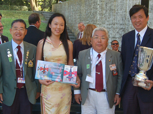
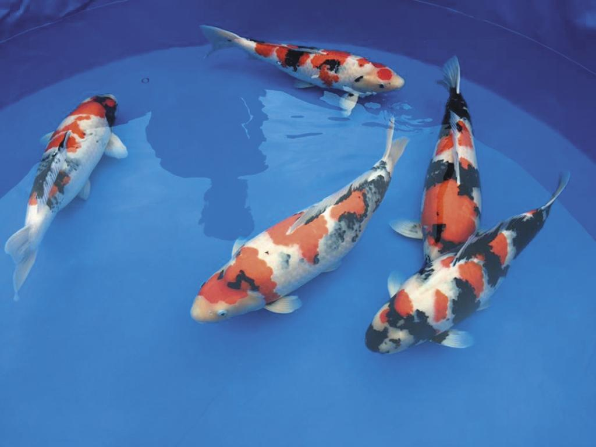

KOI
KOIA LIFE IN LIVING ART
KOIQUEEN
A daughter of the fish ponds brought Taiwanese koi to the world. This is Ms. Chung’s story, told in water, ink, and archival photographs.
BEGIN THE STORYPROLOGUE / YUNLIN, TAIWAN
The water came first.
Before the overseas shows and the record-setting auction, there was a family koi farm. Ms. Chung grew up beside its ponds, left to study art in Beijing, and returned to lead Sing Chang.


01 / THE FARM
A childhood among the ponds. A return as CEO.
The family business faced heavy debt when Ms. Chung came back. Her art training became part of how she selected and presented koi; her work as CEO took Sing Chang into international shows and direct relationships with buyers.
SING CHANG’S 2007 REPORT ↗AT THE FAMILY FARM · MIRROR MEDIA ARCHIVE
THE TURNING POINT
The ponds were local.
The ambition crossed oceans.
In 2003, a trip to the Holland Koi Show revealed how little of the European market knew Taiwanese koi. The answer was to return, show the fish, and meet people face to face.

02 / BEYOND TAIWAN
A booth became a bridge.
Ms. Chung returned to European shows under the “Formosa Taiwan” name. By 2010, reporting described five international shows a year and a direct route to buyers across borders.
READ THE ARCHIVED ACCOUNT ↗HOLLAND KOI SHOW, 2009 · ARCHIVAL PHOTOGRAPH

03 / S-LEGEND · 2018
One bid. ¥203 million.
At Sakai Fish Farm’s auction, Ms. Chung placed the winning bid for the Kohaku S-Legend as the Taiwan dealer for a client. The price travelled around the world. The judgment behind it took years to build.
UK KOI JUDGES’ ACCOUNT ↗SAKAI AUCTION, 2018 · ARCHIVAL PHOTOGRAPH
AFTER THE NUMBER
The fish is more than the price.
Colour, form, movement, lineage, and time: each koi asks for a different kind of attention. Ms. Chung taught people to look beyond the first photograph and imagine how a fish might develop.

04 / THE EYE
To see what a koi might become.
Ms. Chung’s before-and-after studies showed how a young koi could grow into its potential. The comparison made her eye visible to others: body, pattern, colour, and change over time.
HEAR HER TEDxTAIPEI TALK ↗KOI AT SING CHANG · MIRROR MEDIA ARCHIVE

05 / IN HER OWN WORDS
The story reaches the screen.
Discovery Channel featured her entrepreneurial journey in 2011. On the TEDxTaipei stage in 2014, Ms. Chung spoke about returning to the family business and learning to face setbacks as choices.
MS. CHUNG WITH A KOI · DOCUMENTARY STILL
THE STORY CONTINUES
A life spent reading the water.
The ponds, the people, and the fish remain at the centre of Ms. Chung’s work. This is one way to enter the story. The full record and current site are waiting beyond it.
MS. CHUNG AND HER FATHER AT THE FARM · MIRROR MEDIA ARCHIVE